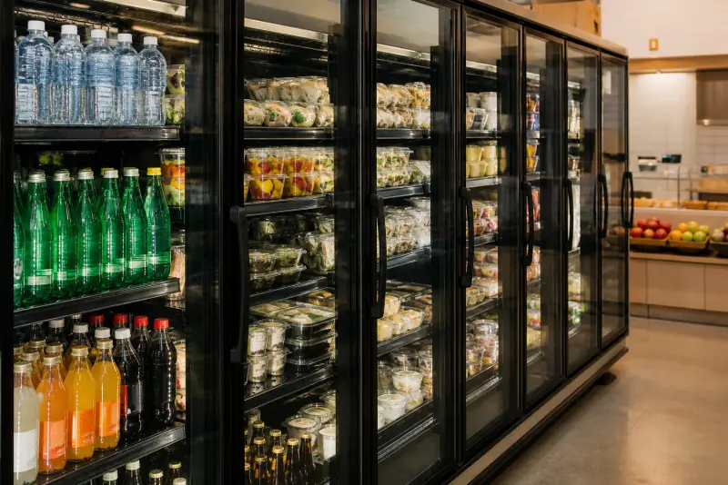
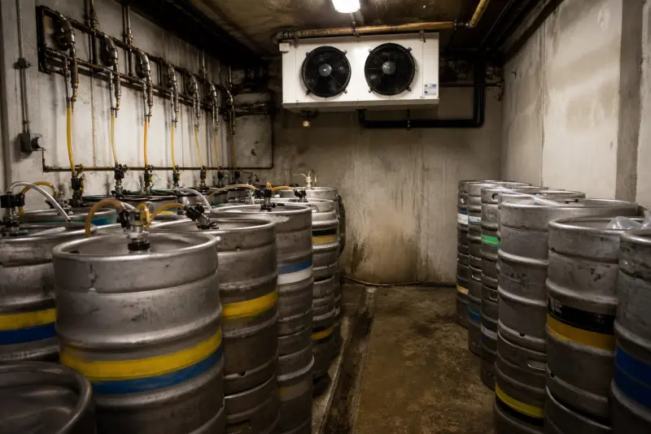

Commercial fridge repair
Prep counters, uprights and under-counter fridges for kitchens and shops.
commercial fridge repair LondonWe provide both repair and service / maintenance for commercial refrigeration. Cold Direct repairs commercial refrigeration for restaurants, pubs, bars, cafes, takeaways, sandwich shops, hotels, staff canteens, convenience stores and supermarkets. We do not take domestic house call-outs. Every van is set up for trade equipment: walk-in cold rooms, freezer rooms, prep fridges, display cabinets, bottle coolers, cellar coolers and wine storage.
Commercial refrigeration service London is PPM across the kitchen, not a new page for every keyword. Servicing condensers, door furniture and probes on a service contract stops Saturday breakdowns. Catering sites use planned servicing so the EHO sees logs, not excuses. We still run 24/7 repair when a cold room or freezer has already climbed. The diary visit is how restaurants, pubs and shops keep plant legal between emergencies.
North London Commercial Refrigeration Engineers from our team work a 25 mile radius from North London. That takes in all of Greater London and the main Hertfordshire and Essex corridors our customers already use for suppliers. If your site is in that ring, call us. If you are just outside it, still call - we will tell you on the first conversation whether we can reach you today.
A warm walk-in at 10pm on a Saturday is an emergency, not a Monday job. We run 24/7 emergency commercial refrigeration repair so chefs, duty managers and night porters can get a number that answers. You speak to someone who books refrigeration work every day. You get a time, not a ticket number.
Most commercial faults we see are the same handful: dirty condensers, failed evaporator fans, leaking door furniture, iced evaporators, weak compressors, and controllers that have lost their set point. We diagnose on site, quote the repair before we start, and carry common Williams, Foster, Polar, Blizzard and Gram parts so first-visit fixes stay high. If a part has to be ordered, we tell you the lead time before you commit.


Prep counters, uprights and under-counter fridges for kitchens and shops.
commercial fridge repair London
Chest and upright freezers that must hold legal frozen temperatures.
commercial freezer repair London
Walk-in chillers for restaurants, butchers and catering production.
Cold room repair →
Walk-in freezer rooms for wholesale, ice cream and frozen storage.
Freezer room repair →Serve-over, multideck and glass-door merchandisers.
Display cabinet repair →Pub and bar cellar cooling so beer and kegs stay in spec.
Cellar cooler repair →
Back-bar bottle coolers for pubs, clubs and takeaways.
Bottle cooler repair →
Commercial wine cabinets for restaurants, hotels and off-licences.
Wine cooler repair →
Air-cooled, water and process chillers for restaurants and bars. Commercial only.
Chiller repair London →
Multideck, island freezers and dairy cabinets. Early morning trade callouts.
Supermarket fridge repair London →
Commercial AC for restaurants, takeaways and shops. Split and VRF. Not domestic.
Air conditioning repair London →Williams, Foster, True, Hoshizaki, Polar, Blizzard, Gram, Lec, Snomaster, Tefcold and Empire. We also work on most other trade cabinets if you send the model plate. WhatsApp or email a photo of the data sticker if you want us to check parts before travel.

We are North London commercial refrigeration engineers. Coverage includes North London, Enfield, Barnet, Finchley, Wood Green, Tottenham, Edmonton, Walthamstow, Chingford, Southgate, Palmers Green, Winchmore Hill, Cockfosters, Potters Bar, Borehamwood, Camden, Islington, Hackney, Haringey, City of London, Westminster, Harrow, Watford, St Albans, Cheshunt, Waltham Cross, Harlow, Ilford, Romford, Stratford, and all London within a 25 mile radius of North London, plus the Hertfordshire and Essex towns on that ring.
Twenty dedicated London pages for crawlers and local search. Each borough page has unique Cold Chain copy, LocalBusiness schema and a path to book.
5 Sep 2025
Five causes of heavy ice on a commercial freezer, a safe defrost, and when to call an engineer.
Read the guide →Call any number. Tell us the site, the make, and whether it is a cold room, freezer, display or cellar. We will give you the next emergency or planned slot.